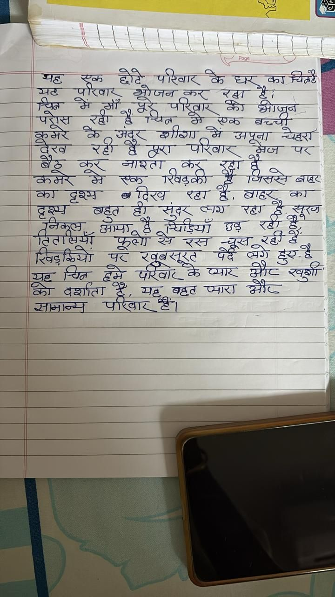

File: hin_sample_09.jpg

यह एक छोटे परिवार के घर का चिन्ह है। यह परिवार भोजन कर रहा है। चित्र में माँ पूरे परिवार को भोजन परोस रही है चित्र में एक बच्ची कमरे के अंदर शीशा में अपना चेहरा देख रही है पूरा परिवार मेज पर बैठ कर नाश्ता कर रहा है कमरे में एक खिड़की है जिससे बाहर का दृश्य दिख रहा है, बाहर का दृश्य बहुत ही सुंदर लग रहा है सूरज निकल आया है चिड़ियाँ उड़ रही है तितलियाँ फूलों से रस चूस रही है खिड़कियों पर खूबसूरत पेड़ लगे हुए है यह चित्र हमें परिवार के प्यार और खुशी को दर्शाता है, यह बहुत प्यारा और सामान्य परिवार है।
ഒരു यह एक छोटे परिवार के घर का चित्र है। यह परिवार भोजन कर रहा है। चित्र में माँ पूरे परिवार को भोजन परोस रही है चित्र में एक बच्ची कमरे के अंदर शीशा में अपना चेहरा देख रही है पूरा परिवार मेज पर बैठ कर नाश्ता कर रहा है कमेर में एक रिखड़की है जिससे बाहर का दृश्य दिख रहा है, बाहर का दृश्य बहुत ही सुंदर लग रहा है सूरज निकुल आया है चिड़ियाँ उड़ रही हैं, तिरासयाँ फूलों से रस चूस रही हैं रिखड़कियों पर खूबसूरत पर्दे लगे हुए है यह चित्र हमे परिवार के प्यार और खुशी को दर्शाता है, यह बहुत प्यारा और सामान्य परिवार है।
BEE seers en ae “a Rene a ae Bat 2 Se i Phe Sve et _| — Sa gS छा त्या er साइज _ पूजा aT ie yar दे रा ORG Stor पर जा so कर का 5 5 ox. ¥ saa ST च्घ्व्छा हल शत . Lee TE —_ | का ge DSB एड हैः ae oT — | Gea Sec, al SNE RTT a आता हे SS a a 27 <a eae tad ete ee वी aot oa | meson ane Ge er ar व =o Te Ted RT SIC ae ‘ea Z ४ | __ | — | __] 7 77 का — ७ आओ = _ | जा a =| |
४:4९ Bhim” (eee 7 we at हू या 5 / गा हओ jet | qi Wwe — ye EN Te ego wa AG sea 5]. ue .* : ys >-+< UG TWh ee ee ed = जय eT, ra Se ee 7, . JARRE SSSSs ds! Ee (Ste See EE CSE EE Es SESS edi? =a=e ee lene =e pee Oe EE ee एलन ce ह | आल, SS eb: “esa hl EC. eae. ops = aay fe _ Qn CRAG NSE SG SAR RIES GG Bue ae |e = ८५ WORT Se - NOtoan > बट तय रह) अर ८८7 >> कि fer SN फल ON ES et RC ene a “Wfacigi acl cede. eye SATS 7 x Ps तय aS a NS Aisslob i OW ey) ec ध a eon: Tojo = ew | Meee BES 0: AQ enc tl SEES ELEN, SG: Rae wo | —— TMI Uae Gea: Siesta, सा sen, Gaia: tee NONE GSEs Ae a UF ier PM 3 ih =“ OD GS SHO IMO aid Ue], Sead 4 es ve wa | PRISE विए2 OAS ee a (८) i fon Retz १! eS i EGER a opel - प्् x Oso 5589 aS KGET Pex EP GRE SUX Ne “Se [EE iy ince OP CRS 55८ ख्याल HOD RT A हू तल 7 i ts - aa Sane CERES Gey Ope oe. IS, (2 TOI a RO INGO ae TOIT eat a ४८ a IRR EO OS Oe se ee em | iy i> 7S oe Gad se GS Pn yey = a nate Pe SJ NS ae पार ता पद SERS 0 G2 Reise Bady ae PREG जीजा हर RE ONT OK He —— | AO Se लए 52 8 जाए जया ries aes = BOERS » xs ee मा a fei Lays: STE ST RT es RITES OG ANE on ees fea SSAA AO ८ So rate 52407 Oe sat ie Z TOS YES" इक Beg eae "SI NT SE sors d ne हक eS ॥ Es oa eT SE EINE! vO TONS ie ie WESSi SF Ie SE MARAT Ge Ce sie VE is ___ RS teps FSi) KASDSRC SI aye ol eee ee Ce Se ee ape 7S = eRe ar: a arn छाहःः नल, Geer CIT is | War JIG. x oF a Sy वार SE IGRI? | eae oe eee ana 2 ~ aw Spat ea Sad Vast i ae Ce मम ie ea trees iat Ri. Wal Sad Vat enee Te es, ५ yao 4 See ee 2 प7 ् जय ake Cac aes oT 2 _ _ | Stee 7 SARA SEE EE ee ४ 7 As गाव aa oe prea pe OE ; है| = wee ee ee oe ee PA he [ wl RS Sp = — eae aaa ie _ lf ee we a सा 2 हे = पर = = a Se arr ana are 34: : we te Fe | ‘ eee i a 7 a RS | कल a | 5 om . — = — _—— aoe _ — a ~ ? x ; “7 के लि —SE_— - SS ee ee ee i a Se {gr : } | | \ Vibe ee ne re ee | हि emer) 5 ame tee Fe nee AM 7 30. ४४07८: nee ee 5. | e ve 0 Ae a PES eS TN ; 2 270 शी 82202 0 02) . dae EVAN RRR SO Sg SAN os I ' es 28 eee ent eae eee | | - Sees) Ee A RS LOY SOT reo! : SEMA 2200 0 0 00000 | wea 0५४ दिल 2 20722 PRS 42:7.0:22' igor’ AM oy CONGR SS | NUSCER GS Sieg Sad aig .... ता a Fa Gata Ne TALE 2 eG 27727: ५ "| जा i) Cen EON, SSS ag ah : EAE 4 0 5 मई ss न - Wels a SESE ISES ——-_ “ wpe हि ees NER 2 | ~ a er, mo, Gone EN \ ee वि Bs, मा हि ae ge eee 2४ Va. _ ae पु है ema tie OP Al . * ED Leh oN eee } ae wm NEN . eee Serr ae, 7 t ae ae a ay vse” 2 me! [ a }
परवार जन रहा कर पवार अपूना बाहर रदख रहा सदर टमथ षहट
❌ OCR Failed
१५ाम
षिषषष दघर मह यूबर नि-लि परिचार बेर बधयएचतहे ग-निय शी हटोंटे स्वठा पौरघार श्रेजज नार् बछत हूँए पह्ख रहीँ ई उ्ेल गिने इरावठ बच्चीडू डकँनू मिं गाँड ०१ ॾ ई पोरिज़ार वीय कै। भीज़ुने नूरजार के बैरष थरडी नीवधेनर नयम दुश्र्व दु्इ््य ग शरीजाम मिं अवपुजा। न्यपेट्हट् थ खदूर रहॉं हैँ पोरज्ार रंगज पए तए वर्र ज-ह्े शरर काबत। नए रिड़ेन ९ ई ट्नवे सवर रबिडुवेश् पससटिबाहुइ जब दश रहग हूँ ब्राटारट नयये जहूत हयु खुदर स्र्य उहंग रदुरज् ट द्व उडेंग द्ँइईँ रनिकु् मँजुरहधँ इँचिडिया छबू गंटलागिूमेर पुरजेय रग शुरूग खुचखंद खिबरूँचों पर खुबूखूइूट पर्दैे ग्ड़ो थ्न १४श हुँई्ँ सुछर चिलू हट्डे अड पोरजाए बेठ पचरार उर्ैग८ खुरोँ वर दर्शागता ईँ स्ड्ड बह्ट उ्गराह्ा उंनंरेर० परे जनामाडनेन परिवार है।
पट पीरषा कूक छोटे पटिवाट के ध् काचितट रत्त भट मेंँ मँ भूोजन ग्रे परिवां कर स् कोर ह भोजून कूमरे पोस कै र्वी अंदूर नं पेत्त शीशा मरे मे मेँ मणक बच्ची देेख रही त पए परिवार अपूना ग़ज् चेष्टगी प कमर बेठ क गे एक नाशता रवऴकी क ४ पिम्खे डू बाटट क दृश्य नदिएख रहम ट्ेँ त बाट्ट कर दृश्य निकुतत बहत क टँ सूंद चँड़ियाँ वाग उध रटग रवी ट ठ शूफ टितातियाँ सामा फूगों गे रं चू र हेँ खिड़कियों प खूब्जूएट परटं शगरे ह यँ श्रव पितल हमे परिषोा केआा के मा मीट सुपर्शी कर दर्शाता ठं भव् षव्टट म्याए भौज ज्ञामान्म पीषिा हं।